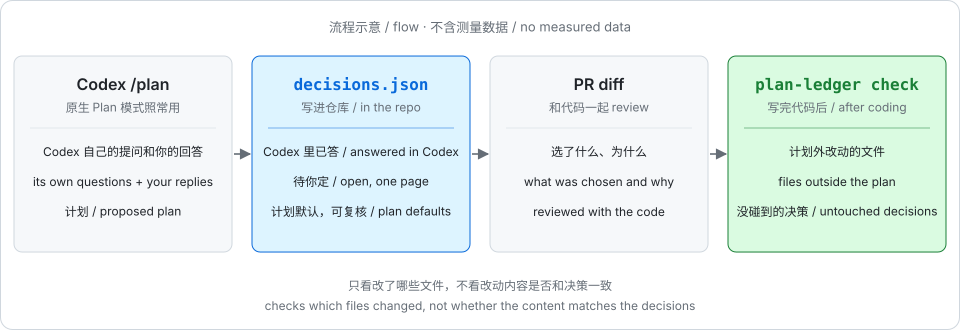

怎么用
Codex 原生 Plan 模式照常用，提问仍在 Codex 里答。渲染不调用模型。
Stop hook 写入账本
计划到达时解析并写
decisions.json与离线 HTML，本轮正常结束。从不阻塞，从不等待。一页复核
待定、已答、默认分开展示；改完后复制回传 JSON，粘到 Codex 下一条消息。
决策进 PR
账本与代码在同一个 PR 里 review：选了什么，为什么。
范围偏离检查
plan-ledger check --base main对照改动文件与计划范围。

决策放在一页里复核
每项一张卡片：选项、推荐、默认、影响的文件。Codex 里已答的会标出；计划默认可改但不算待答。未答记为保留默认，不算同意。
- 纯模板，不调用模型，不联网，单个文件。
- hook 不等待。
- 计划改版时沿用旧答，并标明是沿用的。


范围偏离检查
对照 git diff 与各决策的 affected 文件、计划正文提到的文件，报出计划外文件与没碰到的决策。加 --strict 时有偏离就退出码 1，可用于 CI 或 pre-commit。
已知局限
只比对文件，不读计划内文件的代码内容。文件内与决策相反的实现，当前抓不到。所以叫“范围偏离检查”，不叫决策合规检查。

现状与实测
注意
方向性数据，两轮共 n = 3 对，不是效果证据。轮数上一对都没赢（输 2、平 1）。不以省轮次为目标。
| 轮 / 任务 | 定稿前轮数 原生 / plan-ledger | 计划阶段 input token 原生 / plan-ledger | 总 token 原生 / plan-ledger | 验收 |
|---|---|---|---|---|
| 1 / strict-option | 1 / 2 | 294,933 / 372,651 | 717,487 / 586,971 | 都通过 |
| 2 / strict-option | 1 / 2 | 65,931 / 83,141 | 180,208 / 205,644 | 都通过 |
| 2 / month-unit | 1 / 1 | 79,553 / 66,354 | 179,053 / 140,020 | 都通过 |
范围偏离检查（3 次 plan-ledger 运行，实现后埋入）：干净树无误报 3/3；计划外新文件 3/3 抓到；该改未改 3/3 抓到；在计划内文件写与决策相反的代码 0/3 抓到，与已知局限一致。